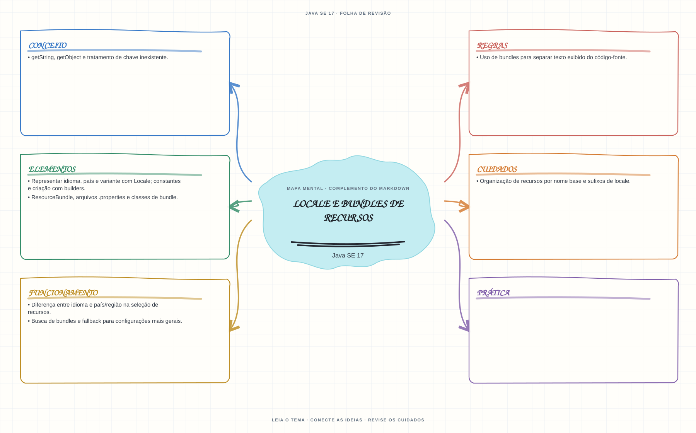

Ver mapa mental deste assuntoSeparar idioma de região e prever a resolução de bundles e o fallback de recursos.
Aprofundamento e revisão 1Z0-829: use esta página depois dos fundamentos. Os tópicos de prova complementam a trilha inicial e não são pré-requisitos para começar a programar.
- Leia o objetivo e localize a ideia principal no conteúdo abaixo.
- Preveja o resultado, compile e execute o exemplo.
- Faça a atividade sem copiar a solução e confira a checagem comentada.
EXEMPLO DE CONSOLE
Veja a regra em execução
Antes de executar, anote sua previsão. Compile o exemplo com o JDK e compare a saída observada com as regras deste assunto.
Comandos para compilar e executar
javac -d target/bin src/11-localizacao/locale-e-bundles/LocaleEBundlesExample.java
java -cp target/bin LocaleEBundlesExampleA execução imprime o resultado no console para você comparar com sua previsão.
Consultar código-fonte: LocaleEBundlesExample.java
import java.util.ListResourceBundle;
import java.util.Locale;
import java.util.ResourceBundle;
public class LocaleEBundlesExample {
public static void main(String[] args) {
System.out.println("=== Locale e ResourceBundle ===");
for (Locale locale : new Locale[] {
Locale.forLanguageTag("pt-BR"),
Locale.US
}) {
ResourceBundle mensagens =
ResourceBundle.getBundle("LocaleEBundlesExample$Mensagens", locale);
System.out.println(locale.toLanguageTag() + " -> "
+ mensagens.getString("saudacao"));
}
System.out.println("O bundle pt-BR sobrescreve a saudacao; outros locales usam o bundle base.");
}
public static class Mensagens extends ListResourceBundle {
@Override
protected Object[][] getContents() {
return new Object[][] {
{"saudacao", "Welcome to Java study"}
};
}
}
public static class Mensagens_pt_BR extends Mensagens {
@Override
protected Object[][] getContents() {
return new Object[][] {
{"saudacao", "Bem-vindo aos estudos de Java"}
};
}
}
}
PRATIQUE AGORA
Faça uma pequena alteração por conta própria
Crie dois arquivos de recursos para idiomas diferentes e carregue uma mensagem usando ResourceBundle.
Concluído quando: o programa compilar, produzir o resultado esperado e você conseguir explicar a regra aplicada.
CHECAGEM RÁPIDA · Locale e bundles de recursos
O que acontece se não houver bundle para o locale mais específico solicitado?
Conferir resposta comentada
ResourceBundle procura alternativas mais gerais e o bundle base conforme as regras de busca; uma chave ausente pode resultar em MissingResourceException.
Estude
- Representar idioma, país e variante com
Locale; constantes e criação com builders. - Diferença entre idioma e país/região na seleção de recursos.
ResourceBundle, arquivos.propertiese classes de bundle.- Busca de bundles e fallback para configurações mais gerais.
getString,getObjecte tratamento de chave inexistente.- Organização de recursos por nome base e sufixos de locale.
- Uso de bundles para separar texto exibido do código-fonte.
Prática
Crie bundles para dois idiomas e observe a resolução quando falta uma chave em um locale mais específico.
Como este capítulo se relaciona com cada exame
Conceitos de locale são reaproveitáveis; valide objetivos específicos de Java 8.
Base de estudo deste portal; confirme o mapeamento com o blueprint vigente.
Conceitos úteis; confira APIs e objetivos vigentes de Java 21.
Orientação editorial sobre reaproveitamento do material; não representa objetivos oficiais nem garante cobertura do exame. Consulte o comparativo e as fontes da Oracle.